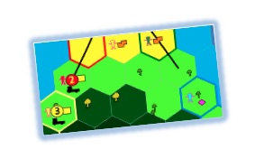

|
Dukunú Mole Un simulateur hybride en appui a un jeu sérieux pour la planification participative du paysage a São ToméPierre Bommel, Christophe Le Page, Anne Dray, Claude GarciaCe simulateur hybride peut etre utilisé en tant que support dun jeu de rôles (JdR) appelé "Dukunú Mole".
Comment matérialiser un plan daction qui concilie les besoins humains avec la protection des ressources naturelles dans la zone tampon de São Tomé ? Le jeu a été concu et développé avec
des membres de Birdlife en association avec la start-up LEAF,
lETH University et lUMR SENS
du CIRAD.
Voir lexplication détaillée du jeu sur le site de ComMod. Un manuel du jeu est disponible en portugais.
|
|